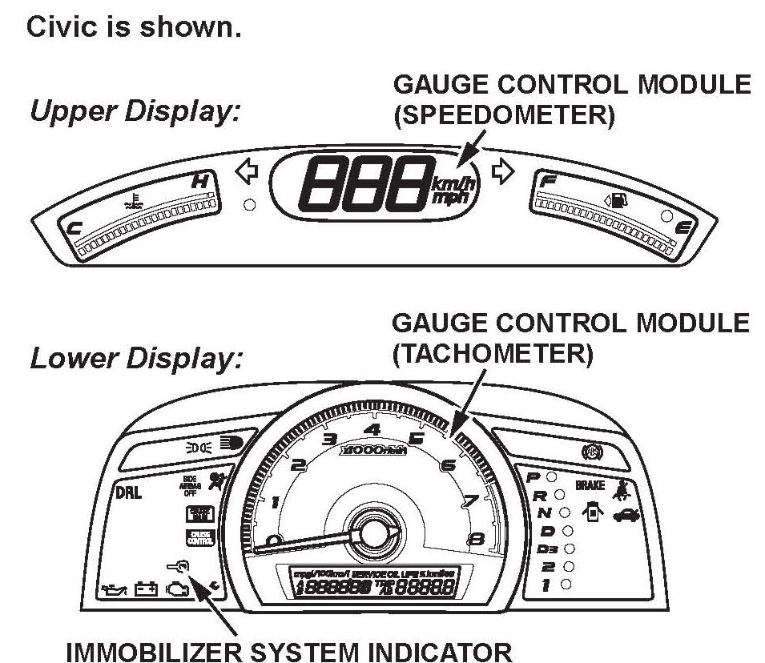
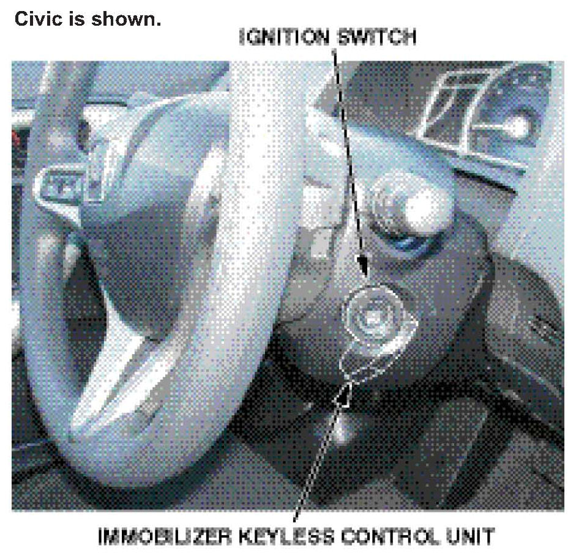

System Description
SYSTEM DESCRIPTIONImmobilizer Indicator

The immobilizer indicator is on the instrument panel. When you insert a programmed ignition key (master or valet) into the ignition switch, and turn the switch to ON (II), the indicator flashes once and then goes off. At this point, the engine can be started by turning the ignition switch to START (III). Unlike previous systems, the indicator does not come on when you turn the ignition switch to LOCK (0).
If you insert a nonprogrammed ignition key into the ignition switch and turn the switch to ON (II), the indicator comes on for 2 seconds and then starts to flash. The immobilizer system results vary, depending on how quickly you turn the key.
Civic 2/4-door; Civic Si, and CR-V:
^ If the ignition switch is turned quickly from LOCK (0) to START (III), the engine will start and run for about 1 second, then shut off.
^ If the ignition switch is turned to ON (II), then you pause before turning to START (III), the starter will crank the engine, but the engine will not start.
Civic Hybrid:
^ During normal air temperatures, if the ignition switch is turned START (III), the gauges and gauge warning indicators come on, but the engine will not crank.
^ During extremely cold conditions (about 0°F or lower) or a low IMA battery:
- If the ignition switch is turned quickly from LOCK (0) to START (III), the engine will crank with the starter motor, not the IMA motor, and run for about 1 second, then shut off.
- If the ignition switch is turned to ON (II), then you pause before turning to START (III), the starter motor, not the IMA motor, will crank the engine, but the engine will not start.
Unlike the previous system, when a nonprogrammed key is used and the ignition switch is returned to LOCK (0), the immobilizer indicator flashes 10 times to show that the system has reset.
Immobilizer-Keyless Control Unit

The immobilizer-keyless control unit is inside the bezel around the steering column. It uses electromagnetic induction to energize the immobilizer transponder in the key. There is no direct electrical connection. Once the electronic circuits are energized, the key sends its ID code to the immobilizer-keyless control unit which checks the code against the codes stored in its memory. If the ID code matches, the control unit sends a unique serial code to the ECM/PCM, and the engine starts. If the ID code does not match, no serial code is sent, and the engine does not start.
Engine Control Module (ECM) Powertrain Control Module (PCM)
The ECM/PCM is an integral part of the immobilizer system. When the ECM/PCM receives the unique serial code from the immobilizer-keyless control unit, it communicates or "handshakes" with the immobilizer-keyless control unit by sending back its own unique serial code. If the serial codes are mutually recognized, the ECM/PCM energizes the fuel supply system and the ignition system so the engine can start.